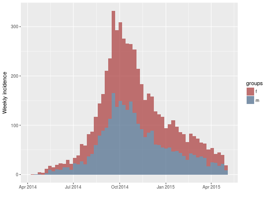

This function computes incidence based on dates of events provided in various formats. A fixed interval, provided as numbers of days, is used to define time intervals. Counts within an interval always include the first date, after which they are labelled, and exclude the second. For instance, intervals labelled as 0,3,6,... mean that the first bin includes days 0, 1 and 2, the second interval includes 3, 4 and 5m etc.
incidence(dates, interval = 1L, ...) # S3 method for integer incidence(dates, interval = 1L, groups = NULL, na_as_group = TRUE, ...) # S3 method for default incidence(dates, interval = 1L, groups = NULL, na_as_group = TRUE, ...) # S3 method for numeric incidence(dates, interval = 1L, ...) # S3 method for Date incidence(dates, interval = 1L, ...) # S3 method for POSIXt incidence(dates, interval = 1L, ...) # S3 method for incidence print(x, ...)
An list with the class incidence, which contains the
following items:
For details about the incidence class, see the dedicated
vignette: vignette("incidence_class", package = "incidence")
The main other functions of the package include:
fit: Fit log-linear model to computed incidence.
fit_optim_split: Find the optimal peak of the epidemic
and fits log-linear models on either side of the peak.
subset: Handling of incidence
objects.
pool: Sum incidence over groups.
as.data.frame: Convert an incidence object to a
data.frame.The following vignettes are also available:
overview: Provides an overview of the package's features.
customize_plot: Provides some tips on finer plot customization.
incidence_class: Details the content of the incidence
class.
## toy example incidence(c(1, 5, 8, 3, 7, 2, 4, 6, 9, 2))#>#> <incidence object> #> [10 cases from days 1 to 9] #> #> $counts: matrix with 9 rows and 1 columns #> $n: 10 cases in total #> $dates: 9 dates marking the left-side of bins #> $interval: 1 day #> $timespan: 9 days #>incidence(c(1, 5, 8, 3, 7, 2, 4, 6, 9, 2), 2)#>#> <incidence object> #> [10 cases from days 1 to 9] #> #> $counts: matrix with 5 rows and 1 columns #> $n: 10 cases in total #> $dates: 5 dates marking the left-side of bins #> $interval: 2 days #> $timespan: 9 days #>## example using simulated dataset if(require(outbreaks)) { onset <- ebola.sim$linelist$date.of.onset ## daily incidence inc <- incidence(onset) inc plot(inc) ## weekly incidence inc.week <- incidence(onset, interval = 7) inc.week plot(inc.week) plot(inc.week, border = "white") # with visible border ## use group information sex <- ebola.sim$linelist$gender inc.week.gender <- incidence(onset, interval = 7, groups = sex) inc.week.gender head(inc.week.gender$counts) plot(inc.week.gender) }